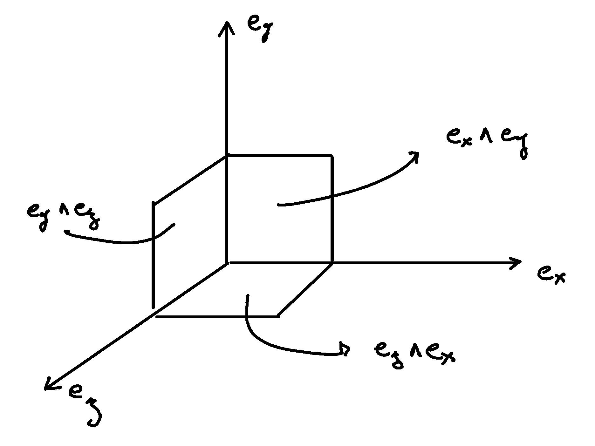

Hodge Duality#
The Hodge dual is in my opinion often presented with unnecessary complexity, frequently involving from the outset a number of dimensions beyond three, varying metric signatures, and a formal mathematical approach. However, the concept is very intuitive in the familiar three-dimensional space we live in, and from there, extending to four-dimensional Minkowski space may then be easier.
In the first part of this article, I tentatively simplify the concept of the Hodge dual by focusing on three dimensions. The second part presents the systematical calculation of the Hodge duals in Minkowski spacetime. This discussion assumes you, the reader, to have a solid understanding of vector calculus and familiarity with Élie Cartan’s differential forms.
I generally use a toolbox of concepts and notation that I dub the Cartan-Hodge formalism. This article can however be read independently. In this page the relevant bit of notation from this Cartan-Hodge formalism is that basis vectors \(\mathbf{e}_μ\) are noted with the partial derivative symbol \(∂_μ\):
I don’t necessarily expect all readers to have ever considered partial derivatives as basis vectors. For our purpose, this is simply a matter of using a notation, which is both widespread and standard.
Finally, I would like to point out the exceptional work of Michael Penn for the quality of his content. In particular, I recommend the following:
Differential Forms | The Hodge operator via an inner product.
Differential Forms | The Minkowski metric and the Hodge operator.
These videos provide an alternative, yet equivalent, approach to the conclusions presented in this article. There is also the added bonus that he uses the same metric signature \((+,-,-,-)\) as me. I prefer my way, but I learned and understood first his way.
I am currently revisiting this article and expanding its content, particularly in relation to Minkowski space. As a result, some sections are still in draft form, and despite my best efforts to ensure accuracy, there may be typos and errors. This page was last updated on 10-20-2024.
Duality in three dimensions#
First consider a coordinate basis in 3 dimensions corresponding to our intuitive understanding of space \(∂_x\), \(∂_y\) and \(∂_z\). Observe that we did not merely define three unit vectors, but also three unit surfaces that we name using the wedge symbol \(∧\). The surface along the \(x\) and \(y\) axis is named \(∂_x ∧ ∂_y\), along the \(y\) and \(z\) axis \(∂_y ∧ ∂_z\), and along the \(z\) and \(x\) axis, \(∂_z ∧ ∂_x\):
{kind=link}

The naming of the surfaces is carefully chosen counterclock wise. The reason is that not only we can define a surface (a number) from two vectors but also given a vector together with a surface, we can uniquely determine the second vector needed to obtain that surface. The surface need be oriented and a sign convention chosen (counterclockwise is positive). For example, \(∂_z ∧ ∂_x = - ∂_x ∧ ∂_z\).
Each basis surface can be associated with a unique basis vector:
We note this relation with the star symbol \(⋆\):
This association defines a dual vector to every oriented surfaces and is called the Hodge dual, noted with the star operator \(⋆\) operator. The relation holds in both direction:
The Hodge dual in three dimensions is the cross product. The cross product defines a vector perpendicular to the surface whose length is proportional to the amount of rotation:
This establishes the deep connection between the Hodge dual, rotations, surfaces, and the cross product.
Going one step futher, we observe that we did not merely define unit surfaces, but also unit volumes that we note \(∂_x ∧ ∂_y ∧ ∂_z\). We can associate the unit volume with numbers:
As well as:
Where \(\mathbf{1}\) is the unit number. In other words any number can be expressed as a linear combination of \(1\).
Pseudo-vectors and pseudo-scalars#
From the vector basis, we have obtained the following objects:
Scalars.
Vectors.
Bivectors corresponding to surfaces, and also called pseudo-vectors.
Trivectors corresponding to volumes, and also called pseudo-scalars.
Placing the objects in front of a mirror:
Scalars look the same.
Vectors look the same.
Surfaces are flipped and the sign changes.
Volumes are flipped and the sign changes.
This is the reason behind the naming pseudo-vector. When placed in front of a mirror, the sign of a positive oriented surface goes to negative. These objects are associated to vectors through the hodge dual. These dual vectors flip their directions with the image of the oriented surface.
This is also the reason behind the name pseudo-scalar. When placed in front of a mirror, the sign of a positive oriented volume goes to negative. These objects are associated to scalars through the hodge dual. This dual scalars flip their signs with the image of the oriented volume.
Inner product of k-vectors#
bivectors in 3-dimensional Euclidean space#
In essence, the inner product can be understood as the concept of measuring a shadow. The inner product between two vectors is the measure of the 1-dimensional shadow of one vector onto the other. Similarly, the inner product between bivectors is the measure of the surface shadow of one surface onto the other. This 2-dimensional surface can be calculated from the determinant of a \(2 ⨯ 2\) matrix. We then generalize to 3-dimensions by calculating the determinant of \(3 ⨯ 3\) matrices, corresponding to the volumes covered by 3-vectors. A k-dimensional shadow measure can then be calculated using \(k ⨯ k\) matrices, corresponding to hypervolumes of dimension k. This permits to find a meaningfull way to lift the inner product from vectors to bivectors, trivectors, and k-vectors. Lifting the inner product will finally permit to generalize the the Hodge dual to any metric signature, and apply to Minkowski space with metric signature \((+,-,-,-)\). In 3-dimensional Euclidean space, the inner product of the basis vectors, denoted with with either the dot symbol \(\cdot\) or the bracket symbol \(\braket{|}\) is given by:
Consequently, we obtain the following dot products:
A hint that the inner product can be generalized to surfaces is that in 3 dimensions, we can associate a basis surface to each of the basis vectors through the Hodge dual, as argued at the beginning of this article. It may then feel natural, since \(∂_x\) is associated to \(∂_y ∧ ∂_z\), to expect that the inner product \(\braket{∂_x|∂_x}=1\) implies that \(\braket{∂_y ∧ ∂_z | ∂_y ∧ ∂_z}=1\). Let us consider two vectors \(a^♯\) and \(b^♯\) in 3-dimensional Euclidean space, written in component form as:
\(a^♯ = p \, ∂_x + q \, ∂_y + r \, ∂_z\)
\(b^♯ = u \, ∂_x + v \, ∂_y + w \, ∂_z\)
Now consider the components of \(a^♯\) and \(b^♯\) along the unit vectors \(∂_x\) and \(∂_y\):
\(p \, ∂_x + q \, ∂_y\)
\(u \, ∂_x + v \, ∂_y\)

Surfaces and the determinant of 2x2 matrices.#
The measure of the amount of shadow of the surface determined by vectors \(a^♯\) and \(b^♯\) on the \(∂_x ∧ ∂_y\) plane is the inner product on bivectors. This lifts the inner product from vectors to bivectors through the determinant:
In the same manner we obtain:
With this quantities, we have measured the amount of shadow from the surface determined by vectors \(a^♯\) and \(b^♯\) onto the unit surface \(∂_y ∧ ∂_z\), \(∂_z ∧ ∂_x\), and \(∂_x ∧ ∂_y\), . We can modify the expression slightly in order to express the inner product of bivectors in terms of the inner products of vectors:
Or put together in condensed form:
With this, we have determined the surface of any arbitrary vector onto the basis surfaces. We can replace vectors \(a^♯\) and \(b^♯\) with any of the basis vectors \(∂_x\), \(∂_y\), or \(∂_z\). We now have a technique to determine the inner product of all 2-forms:
Which permits to obtain:
All other inner products are zero. For example:
Doing this systematically for all 9 possible combinations bivector basis, we obtain:

Volumes and the determinant of 3x3 matrices.#
Finally, we can generalize lifting the inner product to trivectors. In 3-dimensional Euclidean space, we get for the unit trivector:
With this, we remark we have found a meaningfull and reasonable way to extend the inner product to k-forms in Minkowski space. This approach is meaningful, as the inner product of the basis vectors inherently incorporates the metric signature.
k-vectors in Minkowski space#
Inner product of vectors
The inner product in Minkowski space of the basis vectors is:
Fully expanded in table form we have:
Inner product of bivectors
We can use our formulation for lifting the inner product to bivectors:
We get in table form:
Systematic calculations of the inner product of basis bivectors
Inner product of trivectors
As well as for trivectors:
Systematic calculations of the inner product of basis trivectors
Inner product of quadvectors
In Minkowski space, all quadvectors are proportional to \(∂_t ∧ ∂_x ∧ ∂_y ∧ ∂_z\):
Formal and natural definition#
In 3-dimensional Euclidean space, the Hodge dual of a k-vector \(β\) is uniquely defined by the property that for any other k-vector \(α\), the following property holds:
In essence, this asks: Given a k-vector, which m-vector fills the remaining space? Where the inner product \(\braket{α | β}\) ensures that \(⋆ β\) is unique. This question can be viewed as a natural definition and be used for practical calculations. For 4-dimensional Minkowski space, the definition is:
For instance, when seeking the Hodge dual \(⋆(∂_t ∧ ∂_x)\), we know that it must be \(∂_y ∧ ∂_z\) to complete the space, with the sign determined by the inner product \(\braket{∂_t ∧ ∂_x | ∂_t ∧ ∂_x} = -1\). Therefore, in this example, we obtain:
Duality in Minkowski space#
k-vectors#
With this, we can conclude and fully determine the Hodge dual of all k-vectors in Minkowski space:
vectors
Full calculation
Determine the Hodge duals up to the sign
To obtain the volume element \(∂_t ∧ ∂_x ∧ ∂_y ∧ ∂_z\), the Hodge duals must be proportional to:
Check the sign
Since the above was mentally determined, we check by wedging the left part to the right part of the equations above in order to make sure the sign is positive when reordered into the volume element \(∂_t ∧ ∂_x ∧ ∂_y ∧ ∂_z\).
Use the definition of the Hodge dual
Reorder
Apply the values of the inner products
Conclude
If you feel more comfortable with a more mechanical approach I redirect you to the video by Michael Penn: Differential Forms | The Minkowski metric and the Hodge operator.
bivectors
Full calculations of the Hodge dual of bivectors
To obtain the volume element \(∂_t ∧ ∂_x ∧ ∂_y ∧ ∂_z\), the Hodge duals must be proportional to:
For example, taking the second entry as an example \(⋆ (∂_t ∧ ∂_y) \propto ∂_z ∧ ∂_x\), we have:
Taken all together and with the inner product, we have:
Which simplifies to:
trivectors
Full calculations of the Hodge dual of trivectors
To obtain the volume element \(∂_t ∧ ∂_x ∧ ∂_y ∧ ∂_z\), the Hodge duals must be proportional to:
Indeed, we check this for all entries:
Taken all together and with the inner product:
k-forms#
As a final note, we can repeat the definition of the Hodge dual of k-vectors to k-forms. Indeed the inner product is:
We seek the dual k-form that fills the 4-dimensional space: the Hodge dual is defined by the property that for all k-forms \(α\) and \(β\), the following holds: